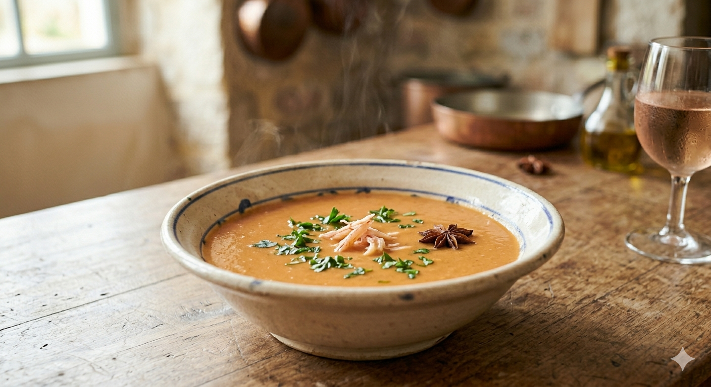

Une recette de caractère qui utilise toute la puissance aromatique des carcasses. Le flambage au Cognac et la pointe de badiane en font un plat d'été raffiné et parfumé.

1. La base aromatique : Dans une cocotte, faites revenir les carcasses dans un filet d'huile d'olive bien chaude. Ajoutez l'oignon émincé et la cuillère de coulis de tomate. Laissez les sucs se développer pendant environ 5 minutes.
2. Le flambage : Versez le Cognac sur les carcasses bien chaudes et faites flamber immédiatement pour libérer tous les arômes du bois.
3. L'infusion : Ajoutez l'ail et le persil hachés. Mélangez bien pendant 2 minutes. Couvrez ensuite l'ensemble avec de l'eau à hauteur. Ajoutez le sel, le poivre et l'étoile de badiane.
4. La cuisson : Laissez mijoter à petits bouillons pendant 30 minutes sous couvert.
5. Le velouté : Retirez l'étoile de badiane. Passez l'intégralité du contenu au blender pour mixer finement les carcasses. Filtrez ensuite soigneusement au chinois (ou une passoire très fine) en pressant bien pour ne garder que le velouté onctueux.
Le petit conseil de Marie : Servez bien chaud avec la chair des crevettes réservée ou quelques croûtons aillés.